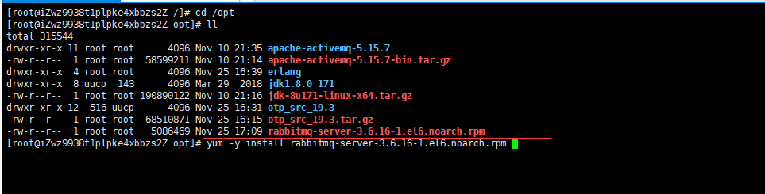
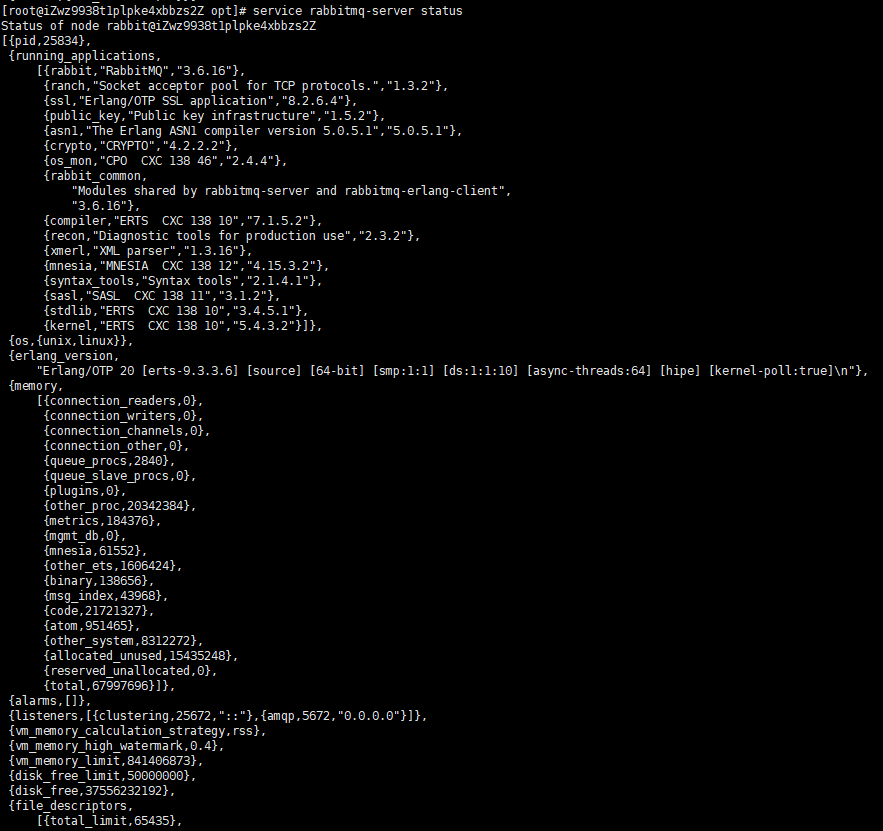
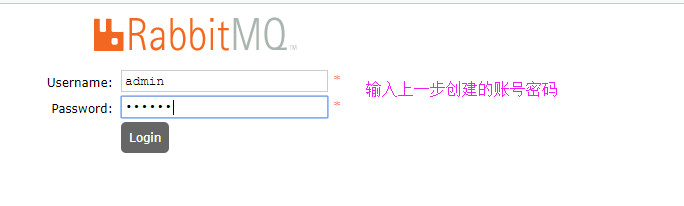

下载rpm包并上传到服务器的/opt目录下，并进行安装

验证rabbitmq是否安装成功
输入命令：service rabbitmq-server start 如果可以启动rabbitmq成功则说明安装rabbitmq成功了
输入命令：service rabbitmq-server status 查看rabbitmq服务的状态

rabbitmq开机自动启动
输入命令：chkconfig rabbitmq-server on
开启rabbitmq的相关端口
略。。。
添加用户并设置访问权限
默认情况下rabbitmq刚装好的时候会自动创建一个名为guest的用户，密码也是guest，访问权限只能够在localhost访问
我们得自己新建一个用户并设置访问权限，输入以下命令：
创建账号，账号名为admin
rabbitmqctl add_user admin 123456
为名为admin的用户设置用户角色为管理员角色
rabbitmqctl set_user_tags admin administrator
设置用户权限
rabbitmqctl set_permissions -p "/" admin ".*" ".*" ".*"
查看当前所有用户和角色
rabbitmqctl list_users
启动rabbitmq的web管理界面
输入命令：rabbitmq-plugins enable rabbitmq_management
在浏览器中输入：http://ip：15672方位rabbitmq的web管理界面，端口号默认为15672，可以自行修改
